6.2 Murphree Efficiencies & 6.3 Rate-Based Method for Packed Columns
6.2 Murphree Efficiencies
Murphree Efficiencies는 실제 tray가 평형에 100% 도달하지 못하니까, 한 tray가 평형에 얼마나 가까이 갔는가?를 물질전달속도식으로 계산하는 파트라고 볼 수 있다.
앞의 Eo=Nt/Na(즉 이론단수/실제단수)가 탑 전체 효율이라면,여기는 tray 하나에서 일어나는 물질전달을 보고 Murphree 효율을 정의하는 부분이다. Murphree vapor efficiency가 가장 오래되고 널리 쓰이는 tray efficiency 모델이다.
여기서 효율이 세가지가 나온다.
| (E_o) | overall stage efficiency | column 전체 기준 효율 |
| (E_{MV}) | Murphree vapor-tray efficiency | tray 하나 전체 기준 기상 Murphree 효율 |
| (E_{OV}) | Murphree vapor-point efficiency | tray 위 특정 지점 기준 기상 Murphree 효율 |
쉽게 설명하면 EMV→tray 하나 평균,
Murphree vapor efficiency의 기본 가정:
-tray로 들어오는 vapor와 liquid 조성이 균일하다.
-tray 위 액체 조성은 완전 혼합되어 있고, 나가는 액체 조성과 같다.
-vapor는 액체층을 통과하면서 plug flow처럼 위로 이동한다.
즉, 액체는 잘 섞여 있고, 기체는 아래에서 위로 지나가면서 점점 조성이 변한다고 보는 것이다.
이제 기호부터 잡도록 하자. tray 번호를 n이라고 하면
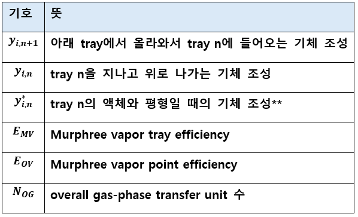
기서 제일 중요한 건 이거다 yi,n+1 →y i,n →y i,n ∗
즉 기체가 트레이를 통과하면서 yin+1에서 yin으로 가는데, 이때 이상적으로 완전 평형으로 도달하게 되면 yi*n이다. 근데 평형에 도달하지 못하고 나갈 수 도 있다.
Murphree vapor efficiency 식
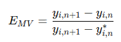
분자는 실제로 제거된 정도, 분모는 이론적으로 평형까지 갔으면 제거될 수 있었던 최대 정도다. 예를 들어 다음과 같다.
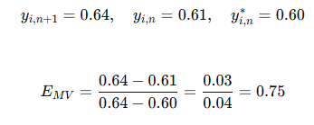
즉 75%만큼 평형에 접근했다는 뜻이다. 근데 이거를 다르게 표현하는 방법이 있어서 알아볼 것이다.
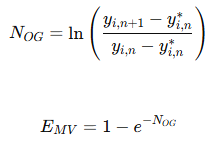
EMV를 위처럼 새로운 인자를 도입하여 표현할 수 있다. 이때 NOG가 높으면 효율이 높음을 의미한다.
약간 헷갈릴 수 있는게 EMV랑 EOV이다.
EMV= tray 전체 평균 효율. 액체가 tray 전체에서 완전히 섞였다고 보면 EMV를 쓴다.
EOV=tray 위의 한 지점에서의 국소 효율. 실제 tray에서는 액체가 왼쪽에서 오른쪽으로 흐르니까, 위치마다 액체 조성이 다를 수 있다. 그래서 어떤 한 지점에서의 효율을 EOV라고 한다.
만약 액체가 완전 혼합이면 EMV=EOV이다. 하지만 플러그 플로우이면 다음 식이 성립한다.
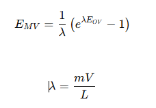
이때 m은 평형선의 기울기이다. m=K로 봐도 되긴한다.
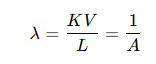
직관적으로 보면 액체가 tray 위에서 완전 섞이면, 기체는 tray 전체에서 거의 같은 액체를 만난다. 그런데 액체가 plug flow처럼 흐르면, 기체가 위치마다 다른 조성의 액체를 만난다. 이때 어떤 경우에는 평균 driving force가 커져서 EMV>EOV 가 될 수 있다.
정리:Murphree efficiency는 처음 보면 진짜 안 와닿는 파트이다. 이론단수 N만 구하다가 갑자기 실제 tray 내부의 거품층, 물질전달속도, EMV, EOV 이런거 나오니까 흐름이 끊긴다. Murphree 효율은 실제 tray 하나가 이론적으로 완벽한 tray의 몇 % 역할을 하느냐를 나타내는 값으로, 이를 배우는 이유는 이론단수를 실제 트레이 수로 바꾸기 위함이다. 앞에서 우리는 그래프법이나 Kremser 식으로 이론단수를 구했다. 예를 들어 이론단 수가 7이라고 해보자. 그러면 완벽한 평형 트레이가 7개 있으면 목표 흡수가 가능하다는 뜻이다. 하지만 실제 트레이는 완벽하지 않고, 잠깐 만나기 때문에 평형까지 100% 도달하지 않을 수 있다. 만약 트레이 효율이 35%라면 실제단은 20개가 필요하게 된다. 이때 효율은 그럼 어떻게 계산하는가? 이게 바로 Murphree efficiency이다. tray 하나에서 기체 조성이 평형값까지 얼마나 가까워졌는가?를 산출하는 값으로 다음처럼 계산한다.
예를 들어 EMV가 0.75면 이 tray는 평형까지 갈 수 있었던 변화량의 75%만 실제로 달성했다는 뜻이다. 이를 가지고 효율 E0를 . 다음과 같은 흐름으로 구할 수 있게 된다.
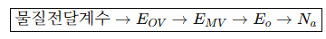
예를 들어 이론단수가 7일때, Murphree efficiency를 계산해본다.
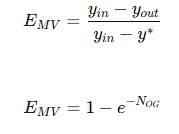
이를 가지고 다음 효율식을 써서 실제 효율을 구한다.
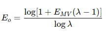
이후 실제 탑 개수를 구한다 .
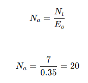
정리하면
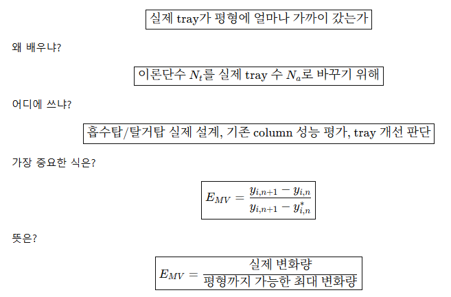
---------------------------------
6.3 RATE-BASED METHOD FOR PACKED COLUMNS
packed column은 tray처럼 단수로 자르기 애매하니까, 속도 기반으로 높이를 계산한다. 즉 앞의 TRAY 컬럼은 몇 단 필요한지? 였다면 이번 챕터는 충전층 높이가 몇m 필요한지?를 구하는 챕터이다. 다음 식을 쓴다.
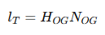
먼저 HETP라는 개념을 알아보자. 이 충전물은 이론단 1개 효과를 내려면 높이가 몇 ft 필요한가?에 해당한다. 예를 들어 이론단이 6개 필요하고 HETP가 2면 lT=2.0×6=12 ft라고 볼 수 있다. 근데 HETP는 그냥 엄밀한 건 아니라서, HETP도 쓰긴 하는데, 더 원리적인 방법은 HTU/NTU를 쓴다. 이는 후술하려한다.
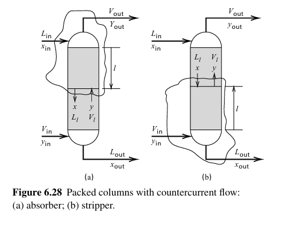 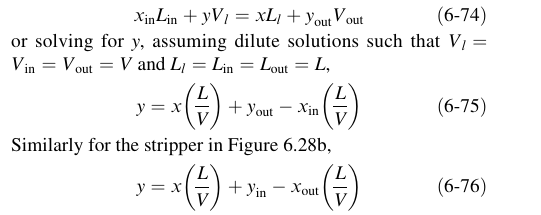
packed absorber의 조작선을 먼저 알아보자. 똑같이 들어오고 나가는 것이 있다고 할 때, 유입=유출의 식을 세우면 위와 같은 조작선이 얻어진다. 조작선은 물질수지에서 나온다는 것을 기억해두자. packed column도 최소 흡수제 유량, 최소 stripping gas 유량 계산은 tray column이랑 같은 방식으로 한다.
하지만 이때 매우 중요한 차이점이 있는데, 바로 two-film theory이다. Packed column에서 물질전달은 기체와 액체가 직접 섞이는 게 아니라, 계면을 사이에 두고 이동한다. bulk gas→gas film→interface→liquid film→bulk liquid 이런 순서로 이동한다. 따라서 중간에 필름 저항이 있으며 이를 합쳐서 전체 물질전달 저항을 본다. 하지만 계면 상태는 보기 힘들기 때문에 전체 저항식을 다음처럼 정의내린다.
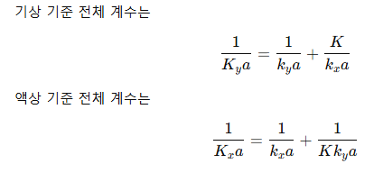
기상 기준 전체 저항=기체 film 저항+액체 film 저항을 기상 기준으로 바꾼 것
액상 기준 전체 저항=액체 film 저항+기체 film 저항을 액상 기준으로 바꾼 것
이제 packed height는 다음과 같다. 유도는 생략한다.
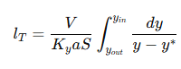
이를 두 덩어리로 나누어서 다음처럼 표현한다.
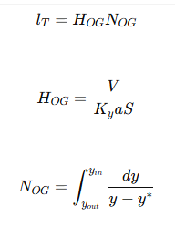
이때 HOG는 전달 1번 하는 데 필요한 높이라고 보면 된다.
실제 문제 풀 때는 보통 이렇게 간다.
- 입구/출구 조성 확인
- 조작선 세움
- 평형선 세움
- y∗를 y의 함수로 표현
- NOG 계산
- HOG 또는 Kya가 주어지면 높이 계산
- 최종적으로 lT=HOGNOG
이때 만약에 평형이면
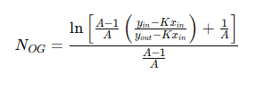
이 성립한다. 이를 통해 탑의 갯수를 알 수 있다.